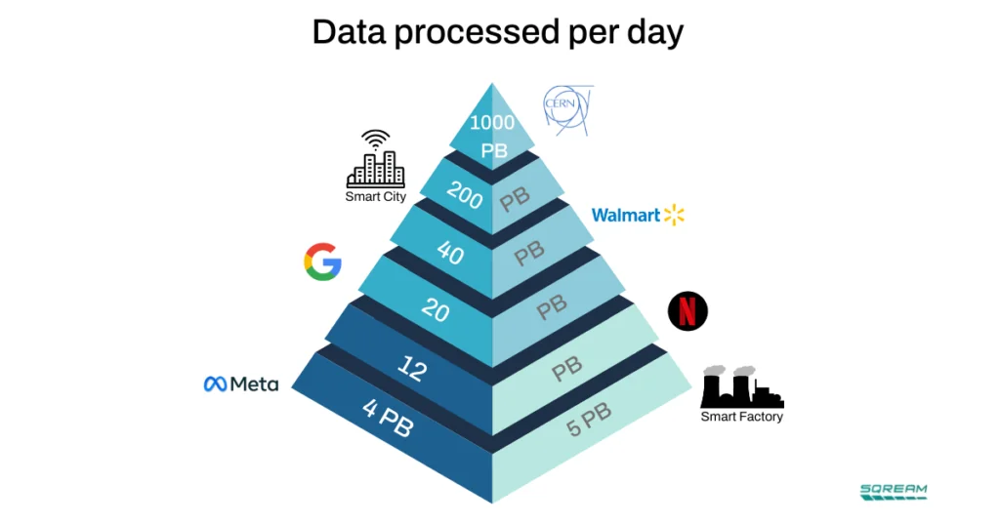

Scientific ML / Performance on HPC systems
The hidden work
behind AI for science.
Scientific machine learning inherits industry’s models but not its operating assumptions. Industry scales by adding FLOPs to abundant, homogeneous data. Science runs on data that is either extreme-scale or scarce, on large irregular samples, and on shared allocations where idle GPU-hours are the real cost. Making it work means treating training as an HPC workload inside a larger simulation loop, and treating every speed optimization as a potential scientific error.
01 / Industry and science
From simulation and analysis
to machine learning.
I came to machine learning from the other end of the pipeline. Before training networks on simulated data, I spent years producing that data and analysing it: writing C++ Monte Carlo simulations of particle transport, radioactive decays and cosmic-ray interactions for germanium experiments, building a Bayesian background model for GERDA, and running MCMC analyses of the KATRIN tritium spectrum on NERSC.
That background shapes how I see scientific ML. When I later trained neural networks on detector waveforms and Geant4 output, and built surrogate models such as RESuM for detector design and black-hole population inference, the hard parts were rarely the architecture. They were how the data was produced and stored, how it reached the GPUs, how simulation and training jobs fit into an allocation, and whether a model’s error would survive into a physics result. My training in data science at UC Berkeley, including ML at scale with Spark and Hadoop, showed me the same problems from the industry side, along with the infrastructure industry has built to solve them.
This essay collects what I have learned at that boundary. Scientific ML runs on the same software stack as industrial ML: PyTorch, transformers, graph networks, diffusion models, distributed data parallelism. The models transfer. The assumptions about data, scaling and error mostly do not.
In science, a learned model is rarely the product. It sits inside a chain of simulation, measurement and inference, in one of four roles: as a surrogate for an expensive physics code inside design or optimization loops; in experimental operations, tuning beams and detectors and detecting faults and drifts online; in accelerated analysis, where reconstruction, denoising and compression happen on streaming detector data; and in large-scale inference, where surrogates accelerate MCMC and networks trained on simulator output perform likelihood-free inference. In each role, model error ends up in a physics result.
What transfers well is infrastructure. Sharded, sequential-read dataset formats in the style of WebDataset or TFRecord, multi-process and GPU-side data loading, sharded optimizers and parameters (ZeRO, FSDP), mixed precision, compiled and fused kernels, and experiment tracking were all developed for industrial-scale training, and solve exactly the problems scientific workloads hit on HPC systems. Much of the HPC performance work in scientific ML is adopting this infrastructure for data it was not designed for.
The big-data stack is instructive for a different reason: it embodies the opposite architecture. Hadoop and Spark were built for commodity clusters in which storage and compute live on the same nodes. HDFS replicates data blocks across those nodes, and the scheduler moves computation to the data. Supercomputers separate the two: compute nodes read from a shared parallel filesystem over the interconnect, which is optimal for tightly coupled simulations and leaves training jobs exposed to every other user’s I/O. Neither architecture is designed for what ML training needs, which is repeated, shuffled, high-throughput reads of the same dataset. The lessons of data locality, however, transfer directly.
What does not transfer are three assumptions: that more data and more FLOPs reliably buy better models; that samples are small, homogeneous and independent; and that small prediction errors are acceptable. Each fails for a specific reason, and each failure shows up as a cost on a shared supercomputer.
02 / The operating regime
Same architectures,
different constraints.
| Industrial ML | Scientific ML | |
|---|---|---|
| Data | Abundant, comparatively homogeneous, user-generated | Either extreme-scale or very sparse; generated by instruments and simulations |
| Objective | Predictive performance | Physical insight, consistency and validity |
| Scaling limited by | FLOPs | Memory, I/O, communication, required fidelity, uncertainty quantification |
| Error tolerance | Small errors acceptable | Errors can invalidate the scientific conclusion |
| Workflow | Largely feed-forward pipeline | Closed loop with simulation and experiment |
| Compute | Dedicated, elastic clusters | Shared allocations, batch queues, wall-time limits |
The data regime spans both extremes. The Rubin Observatory will produce on the order of 20 TB of raw data per night, and individual climate simulations produce multi-petabyte outputs. Rare-event studies, in contrast, may have fewer than 100 high-fidelity samples: my RESuM study of the LEGEND neutron moderator started from four, each costing about 170 CPU-hours.
The compute regime is different too. On a facility such as NERSC’s Perlmutter, jobs run through a batch scheduler on a shared allocation, under wall-time limits, alongside thousands of other users of the same parallel filesystem and network. Throughput is measured against the allocation, so an idle GPU is not just slow: it is charged. Scaling a scientific model is therefore less a question of how many FLOPs a model can use than of how many of the allocated GPU-hours do useful work.
03 / Where the GPU-hours go
I/O, communication
and compute.
In data-parallel training on hundreds to thousands of GPUs, three bottlenecks account for most idle time. None of them is the model.
I/O: data ingestion as the limiting stage


For training, the relevant quantity is not archive size but sustained, randomly accessed read throughput per epoch. TB- to PB-scale training sets are out of core and must be re-streamed from the parallel filesystem every epoch, with aggregate demand growing with the number of loader processes. Most scientific data at NERSC is stored in HDF5, laid out for writing complete simulation states; small random reads trigger metadata lookups and decompression of chunks far larger than the sample. Datasets stored as millions of small files shift the load to the filesystem’s metadata servers, where concurrent open/stat/close calls from thousands of workers cause metadata storms. And correlated samples in space and time limit how freely data can be shuffled without scattering reads or leaking information between training and test sets.
The industrial answer, sharded sequential formats with staging to node-local storage and prefetching, works here, but only after the data has been re-laid out for the sampling policy, which is itself a significant processing job. When the dataset is small enough, the simplest fix is to remove I/O from the critical path entirely: the RESuM training set, about 1 GB of simulated events, is loaded into memory at startup, and the network trains at about 105 samples per second on a single GPU.
Communication: synchronization at scale
Synchronous data parallelism ends each step with an AllReduce of the gradients. For a ring AllReduce of a gradient of size M over p ranks with latency α and bandwidth β, the cost is about 2(p−1)α + 2(p−1)/p · M/β: the bandwidth term approaches 2M/β, the latency term grows with p, and neither shrinks as per-rank computation does under strong scaling. Large, irregular samples force small per-rank batches, so synchronization becomes frequent relative to useful work and harder to overlap with the backward pass. And because AllReduce is a barrier, load imbalance from variable sample sizes or slow reads delays one rank while all others idle: I/O variance becomes exposed communication time, and the job runs at the speed of its slowest rank.
Compute: memory-bound kernels and host overhead
With data resident and gradients synchronized, achieved throughput is still often far below peak. Decompression, normalization and collation running in Python on the host put the CPU on the critical path, and adding data-loader workers runs into the GIL and oversubscribed cores. Many scientific models consist of small, unfused operations with low arithmetic intensity, memory-bound on a roofline. Activation and optimizer-state memory for large spatial or spatio-temporal fields limit batch size, which reduces occupancy and raises relative communication cost. The per-sample footprint alone grows quickly with resolution:
One simulation state
32 GiB
1.07 billion cells
1,024³ cells × 8 quantities × 4 bytes
Double the resolution to 2,048 cells per direction and this becomes 256 GiB. Twice the resolution means eight times the data.
The three are coupled: read variance becomes straggler time at the barrier, and large samples force small batches that raise both communication and launch overhead. Accelerating one stage moves the critical path to the next, so the end-to-end speedup is bounded by the stages that were not accelerated:
- Data loading 70 ms
- GPU work 20 → 5 ms
- Communication 10 ms
1.18× end-to-end speedup
GPU work is 4× faster, but the whole step falls from 100 to 85 ms. Data loading still takes 70 ms.
Illustration, not a benchmark. The model adds sequential data-loading, GPU, and communication times: T = Tdata + TGPU/s + Tcommunication. It assumes fixed work, unchanged non-GPU stages, and no overlap. Real pipelines overlap stages and require profiling; this estimates step time, not time to scientific convergence.
04 / Orchestration
Training is one stage
of a closed loop.
An industrial training pipeline mostly runs forward: data is collected, a model is trained and deployed. A scientific workflow is a loop: simulate → train → infer → validate → select the next simulation. Its stages have very different resource profiles, and the loop, not any single stage, sets the time to a result.
In the RESuM study, the stages look like this. Low-fidelity Geant4 runs take 0.15 CPU-hours and can be farmed out as large job arrays on CPU nodes; high-fidelity runs take about 170 CPU-hours each. Training the neural network takes a few GPU-hours. Evaluating it is cheap: about six million events per second on one GPU, roughly 200 times faster than simulating them. The multi-fidelity model then selects the next high-fidelity simulation by active learning, and each of the six iterations waits on one of those 170-hour runs. The wall-clock time of the study is dominated by simulation and queueing, not by training.
That makes orchestration a first-order performance problem:
- Match resources to stages. Simulation belongs on CPU nodes as job arrays; training and inference on GPU nodes. Holding GPU nodes while CPU-bound simulations run is idle allocation.
- Encode the loop in the scheduler. Job dependencies in Slurm, or a workflow manager such as Snakemake, chain simulation, training and selection without manual hand-offs, and let independent branches proceed in parallel.
- Design for the queue. Wall-time limits and preemption require checkpoint and restart for long training and simulation jobs; the number and size of jobs affects queue wait as much as run time.
- Stage data between steps. Simulation output is written in the layout the simulator prefers; converting it to a training-friendly, sharded format is a pipeline step of its own, best done once rather than in every epoch. This is exactly the kind of embarrassingly parallel extract-transform-load work that Spark was built for: reading many simulation files, filtering and joining events, computing features and writing balanced shards, with fault tolerance for free.
- Spend expensive runs where they inform most. Active learning chooses each high-fidelity simulation to maximally reduce model uncertainty, which is the most effective way to shorten a loop whose bottleneck is the simulator.
05 / Takeaway
The scarce resource is
trustworthy, deliverable data.
Industry has shown how to scale models when data is plentiful and compute is the bottleneck. In science, the scarce resource is different: data that is either too expensive to produce or too large to move, and that must remain physically meaningful through every transformation. Performance engineering for scientific ML is therefore organized around getting the right data to the right device at the right time, with the right fidelity.
That suggests a division of labour. Adopt industry’s infrastructure for data loading, distributed training and memory management, because it solves real problems that scientific workloads share. Co-design the rest, data layouts, sampling, parallelization, scheduling and the simulation loop itself, around the hardware topology and the scientific question. And treat every optimization that changes the numerics or the data, from reduced precision and lossy compression to subsampling and surrogate substitution, as a potential systematic error that has to be validated against the physics before its speedup counts.
The figure of merit is not peak FLOPs or model size, but useful, validated science per allocated GPU-hour.
Continue exploring
Sources & further reading
- Machine learning at NERSC ↗Frameworks, distributed training and facility guidance.
- NERSC: I/O resources and best practices ↗Access patterns, small files and profiling scientific I/O.
- PyTorch: distributed data-parallel design ↗Gradient synchronization, buckets and communication overlap.
- Rajbhandari et al.: ZeRO, memory optimizations toward training trillion-parameter models ↗Sharding optimizer state, gradients and parameters across data-parallel ranks.
- WebDataset ↗Sharded, sequential-read dataset format for large-scale training.
- Zaharia et al.: Resilient distributed datasets ↗The fault-tolerant, in-memory abstraction behind Apache Spark (NSDI 2012).
- Slurm: job arrays ↗Running large sets of independent simulations under a batch scheduler.
- CERN: one exabyte of stored LHC experimental data ↗December 2025. A cumulative archive milestone, distinct from daily processing volume.
- Vera C. Rubin Observatory: the Legacy Survey of Space and Time ↗Survey design and data volumes.
- Cranmer, Brehmer & Louppe: The frontier of simulation-based inference ↗How simulation and machine learning meet in scientific inference.
The grid-memory calculation and the timing budgets are illustrations, not measurements of NERSC workloads. RESuM figures are from the published study.